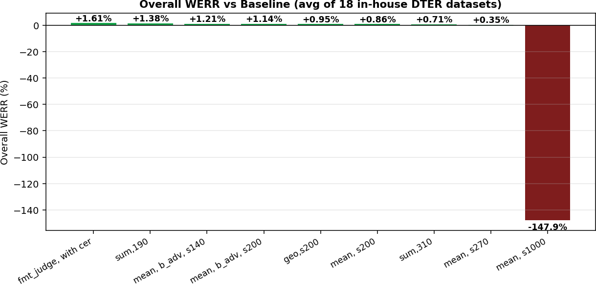
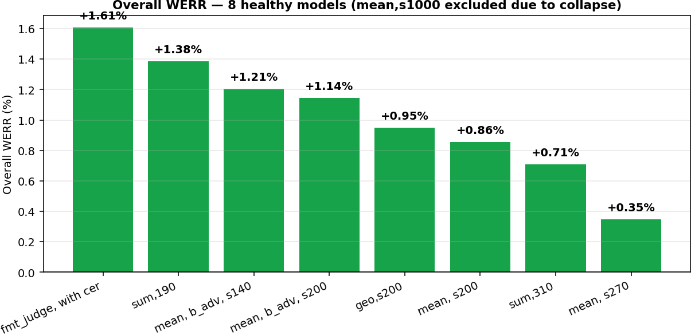
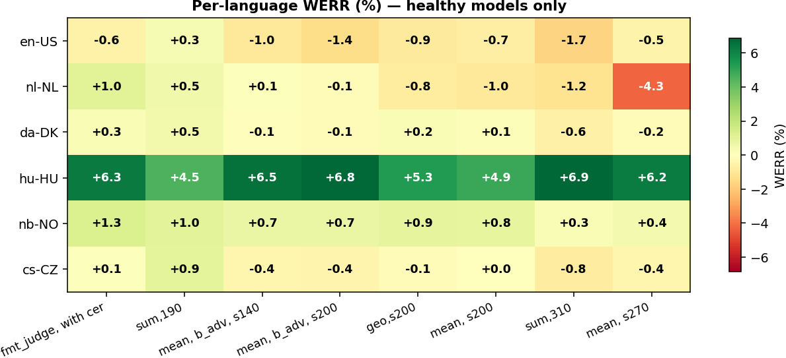
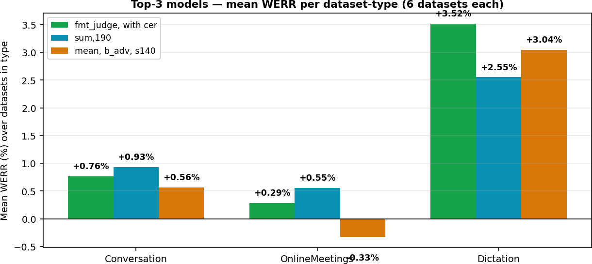
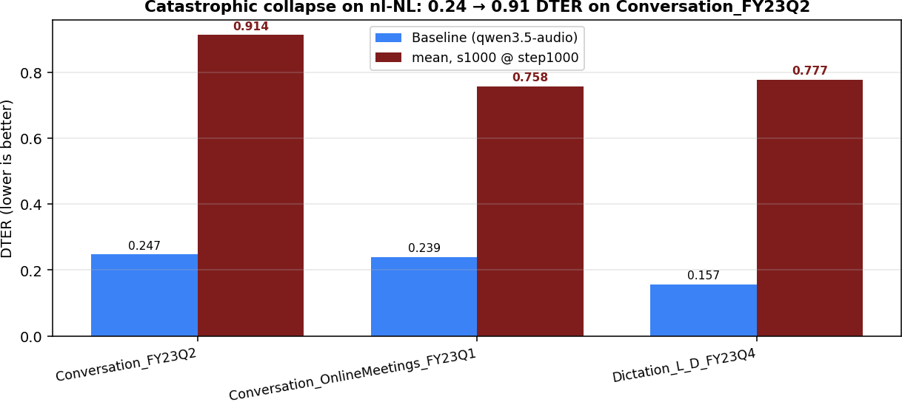

remax_r2_combined_all_seg.xlsx (all-segment eval, bundled in _assets/)| Col | Short label | Recipe |
|---|---|---|
| A | Baseline | qwen3.5-audio (no RL) |
| B | geo, s200 | punc, p=0.7, n=12, s=200, c1, geo-mean aggregation |
| C | mean, s200 | punc, p=0.7, n=12, s=200, c1, mean aggregation |
| D | mean, s270 | punc, p=0.7, n=12, s=1k, mean — early ckpt |
| F | mean, s1000 | punc, p=0.7, n=12, s=1k, mean — late ckpt ⚠ collapsed |
| E | fmt_judge, with cer | format-judge reward + CER, n=12, s=200, mean |
| G | mean, b_adv, s140 | punc, p=0.7, n=12, s=200, mean, binary advantage |
| H | mean, b_adv, s200 | same as G, later step (200) |
| I | sum, 310 | punc, p=0, n=12, e=1, sum reward, step 309 |
| J | sum, 190 | punc, p=0.7, n=12, s=200, sum, step 190 |



| Locale | Baseline DTER | fmt_judge DTER · WERR |
sum, 190 DTER · WERR |
b_adv, s140 DTER · WERR |
b_adv, s200 DTER · WERR |
geo, s200 DTER · WERR |
|---|---|---|---|---|---|---|
| en-US | 0.1409 | 0.1417 · −0.56 % | 0.1405 · +0.28 % | 0.1423 · −1.01 % | 0.1428 · −1.40 % | 0.1421 · −0.88 % |
| nl-NL | 0.2146 | 0.2124 · +1.02 % | 0.2136 · +0.48 % | 0.2144 · +0.07 % | 0.2149 · −0.14 % | 0.2163 · −0.82 % |
| da-DK | 0.2347 | 0.2341 · +0.27 % | 0.2336 · +0.47 % | 0.2349 · −0.06 % | 0.2351 · −0.15 % | 0.2342 · +0.22 % |
| hu-HU | 0.2301 | 0.2156 · +6.30 % | 0.2197 · +4.53 % | 0.2150 · +6.55 % | 0.2145 · +6.77 % | 0.2179 · +5.32 % |
| nb-NO | 0.2119 | 0.2092 · +1.25 % | 0.2098 · +0.99 % | 0.2104 · +0.70 % | 0.2103 · +0.74 % | 0.2100 · +0.88 % |
| cs-CZ | 0.1708 | 0.1707 · +0.08 % | 0.1692 · +0.95 % | 0.1715 · −0.38 % | 0.1716 · −0.45 % | 0.1710 · −0.13 % |
| overall | 0.2005 | 0.1973 · +1.61 % | 0.1977 · +1.38 % | 0.1981 · +1.21 % | 0.1982 · +1.14 % | 0.1986 · +0.95 % |
All values are averages over the 3 dataset types in each locale. WERR sign convention: positive = lower DTER than baseline.


| Dataset | Baseline DTER | Best model | Best DTER | WERR |
|---|---|---|---|---|
| hu-HU_Dictation_DTEST_L_D_FY25Q2 | 0.2430 | sum, 310 | 0.2187 | +9.99 % |
| hu-HU_Conversation_OnlineMeetings_FY24Q2 | 0.2193 | b_adv, s200 | 0.2069 | +5.63 % |
| hu-HU_Conversation_DTEST_FY22Q4 | 0.2280 | b_adv, s200 | 0.2162 | +5.21 % |
| da-DK_Dictation_DTEST_L_D_FY23Q4 | 0.2249 | mean, s270 | 0.2156 | +4.14 % |
| nl-NL_Dictation_DTEST_L_D_FY23Q4 | 0.1573 | fmt_judge | 0.1441 | +8.37 % |
| cs-CZ_Conversation_OnlineMeetings_FY24Q2 | 0.1442 | fmt_judge | 0.1405 | +2.61 % |
| en-US_Conversation_DTEST_FY21Q1 | 0.1857 | mean, s270 | 0.1801 | +3.00 % |
All numbers extracted from sheet inhouse_dter; values are best across the 8 healthy models for each row.